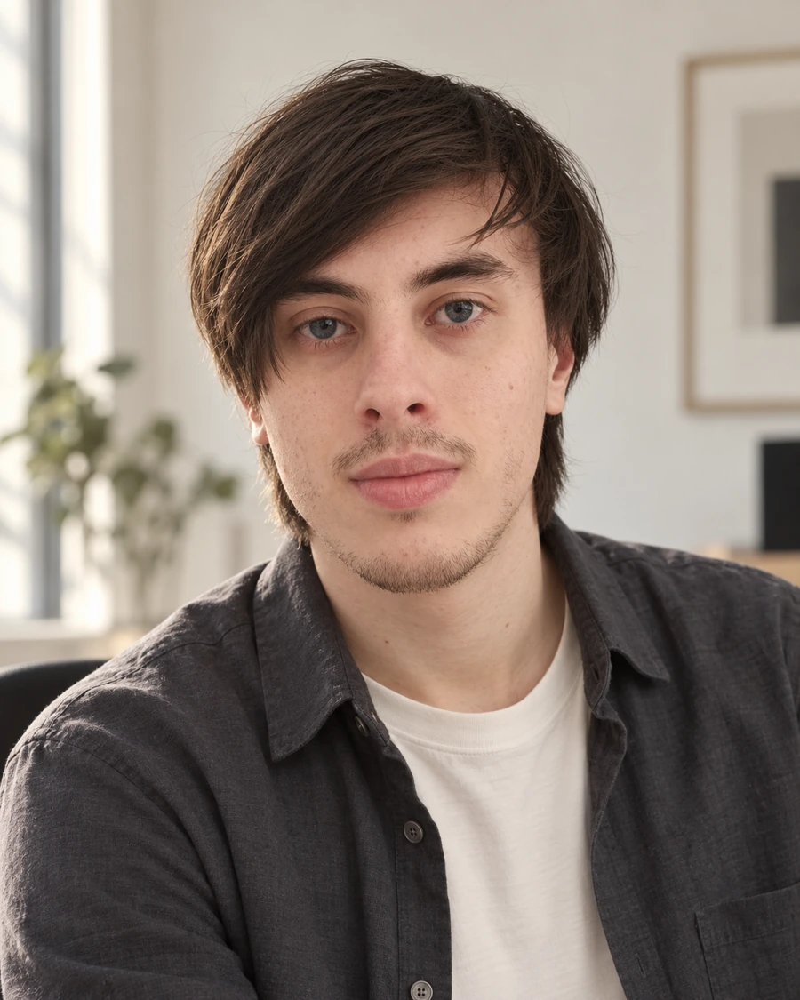

Собрал команду в Lumex
Выстроил найм, ревью и передачу макетов в разработку. Руководил дизайном 16 сайтов и одного веб-приложения.
Lead UX/UISenior Product Designer
С 2020 года проектирую веб-сервисы и мобильные приложения. Руководил командой из 6 дизайнеров и сам веду проекты — от исследования до проверки реализации.
Полное резюме в PDF
Выстроил найм, ревью и передачу макетов в разработку. Руководил дизайном 16 сайтов и одного веб-приложения.
За 6 месяцев наставничества: практика на проектах, разбор решений и регулярная обратная связь.
Вёл дизайн Добро.рф и OpenRN. Спроектировал сервис пожертвований с нуля: публичную платформу, кабинеты и админку. Защищал решения перед руководством государственных структур, Банка России и Альфа-Банка.
Создал и возглавил команду из 6 дизайнеров. Руководил дизайном 16 сайтов и одного веб-приложения; выстроил найм, ревью и наставничество. Среди проектов — Fanza Fusion и Gray Area.
Проектировал маркетплейс My Home Collections с аукционами и социальными механиками, а также My Safe Online для хранения документов.
Проектировал документооборот для СИБ Филин / Россетей, модули строительной SaaS-платформы Pragmacore и мобильный интерфейс Tempick KIDS. Разработал персонажа и интерфейс игры для Альфа-Банка.
Единственный дизайнер стартапа. Спроектировал мобильный агрегатор музеев и событий: исследования, архитектура, прототипы и UI.
Pragmacore — проект Seven Winds Studio, над UX/UI которого я работал.
Серебро · «Кейс года»
Pragmacore. Направление «Digital-интеграция».
Кейс и награды проектаСеребро · 2-е место
Pragmacore. Категория «IT-технологии и онлайн-сервисы».
Кейс и награды проектаФиналист два года подряд
Факультет Fullstack-дизайна
Двухлетняя программа подготовки по дизайну.
Смотреть сертификатРеклама и связи с общественностью
Бакалавриат, заочное обучение. Коммерческая сфера и маркетинг.